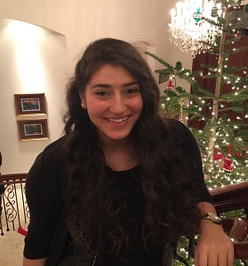

2015-2016 Officers

President: Manvir Kaur
Major: Biology
Year: Senior
Reason for choosing dentistry: I am passionate about dentistry, and healthcare in general, because of the greater good I see the healthcare providers in my community doing for us. In my opinion, one of the best ways to help others is through health care and medicine, which is why I have always wanted to go into the health care field. I always loved going to the dentist growing up, and as I grew older and learned more about the field of dentistry I realized that I wanted to contribute to the profession. Dentistry helps make peoples lives comfortable and boost their confidence. It would be the most rewarding experience if I could help put a confident smile on someones face!
Unique aspect about yourself: I was obsessed with collecting pencils as a child, and still have over a hundred unsharpened ones at home.
Contact: manvirk@uw.edu
Vice President: Chae Mok
Major: Biochemistry
Year: Junior
Reason for choosing dentistry: Throughout my childhood and teenage years, I had always had severely crooked teeth. This degraded my self-esteem so much that I was afraid of expressing joy because of the way my teeth looked. During my orthodontic treatment, I realized that as my smile straightened, I began to express myself through more than just a smile, but with my actions as well. Dentistry is an enabling career that opens doors for patients like myself, and I aspire to open doors for others.
Unique aspect about yourself: I have self-diagnosed trypophobia which is a fear of irregularly patterned holes.
Contact: chaemok@uw.edu
Treasurer: Glendy Gallardo
Major: Molecular, Cellular, Developmental BiologyYear: Senior
Reason for choosing dentistry: as a child, I grew up enjoying going to the dentist and I think it was because I never had a bad experience with them. They were kind, compassionate, and made me laugh. Although there was the occasional filling and necessary shots, I never felt unsafe. I want to be able to give that same experience to someone else and to break the stereotype of hating to go to the dentist. Being a dentist means making an impact on a person’s life and health all starting with a smile!
Unique aspect about yourself: I love playing music! I can play five instruments and most of all, I love to sing.
Contact: glendyg@uw.edu

Secretary: Joelle Moussi
Major: Microbiology
Year:
Junior
Reason for choosing dentistry: I began my interest in dentistry at a very young age–in first grade I was a dentist for career day! As I got older, I became passionate about the field when I started shadowing and volunteering various dentists, eventually becoming a dental assistant; hands-on experience has reassured me that dentistry is still something I am very excited about. Through assisting various surgical procedures, I learned that my favorite aspect of dentistry is being able to see the applications of biocompatibility and its potential benefits in the future of both technology and oral health care.
Unique aspect about yourself: I have karaoke dance parties by myself in my garage.
Contact: jmoussi@uw.edu
Volunteer Coordinator: Halley Flake
Major: Environmental HealthYear: Senior
Reason for choosing dentistry: I'm pursuing dentistry because I love helping people obtain confidence with their smile.
Unique aspect about yourself: I love biking and have finished 2 triathlons.
Contact: hflake@uw.edu
Public Relations: Divya Madhavan
Major: Microbiology
Year: Sophomore
Reason for choosing dentistry: There are definitely many compelling reasons to choose dentistry as a career. Personally, shadowing at dental clinics dramatically shaped my professional goal. I realized that work can be an expression of the general intention of one’s life rather than simply an activity or a means to a certain lifestyle. I was able to identify my true passion within this field and I believe that a smile is the most precious gift you can give to a child.
Unique aspect about yourself: I wanted to be a news anchor and a weather woman before I decided on dentistry & I’m scared of the dentist.
Contact: divya14@uw.edu
Activities Coordinator: Dina Bassyiouni
Major: Biology
Year: Sophomore
Reason for choosing dentistry:
Growing up I hated going to the dentist. Like many children, to me it was just a scary place with sharp tools and injections that hurt. It wasn't until I went to pediatric dentist who explained what he was doing the whole time, that I realized dentists weren't so mean after all. As years passed, my dislike to the visit faded and my interest in dentistry grew. I hope to one day be able to make children coming to the dentist see that it isn't as scary as they thought!
Unique aspect about yourself: I started swimming before I could walk!
Contact: dinaalb@uw.edu
Webmaster: Dorothy Nguyen
Major: Molecular, Cellular, Developmental Biology
Year: Senior
Reason for choosing dentistry:
Throughout my childhood growing up, I always had a positive association with going to the dentist. My shadowing experiences in the dental clinics have allowed me to observe how dentists as healthcare providers reach out to others and provide to their oral health and hygiene needs. I loved how dentistry gives people a boost of confidence even in the simplest actions of improving their smiles. I believe the greatest joy is knowing when I can assist in placing a beautiful smile on someone's face.
Unique aspect about yourself: I really enjoy nature hikes and I also like running 5Ks in my spare time.
Contact: ddtn2@uw.edu